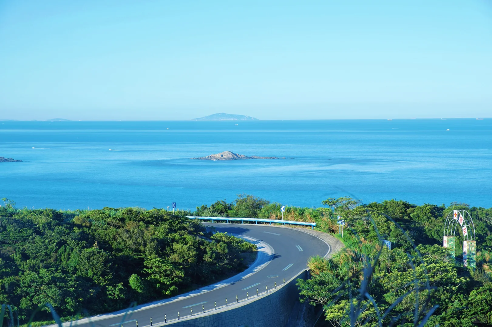
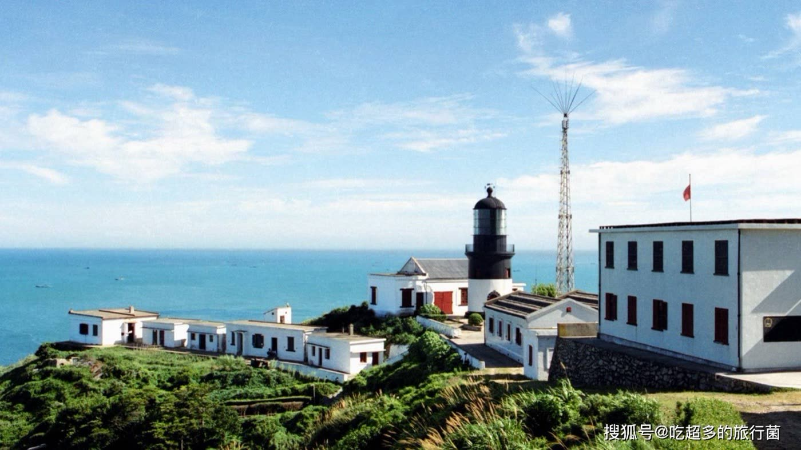
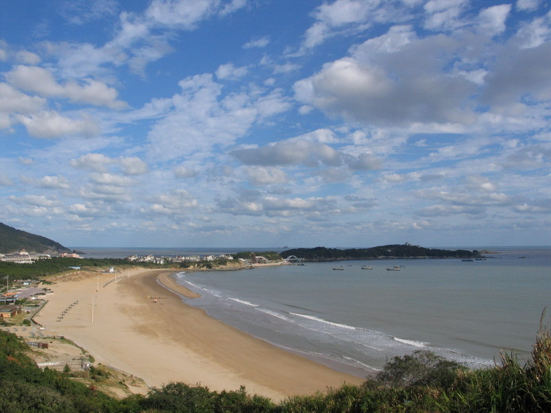
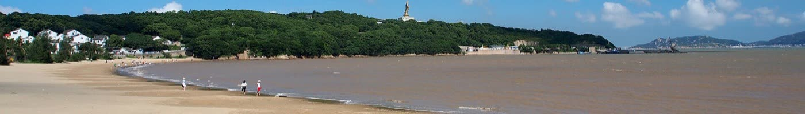
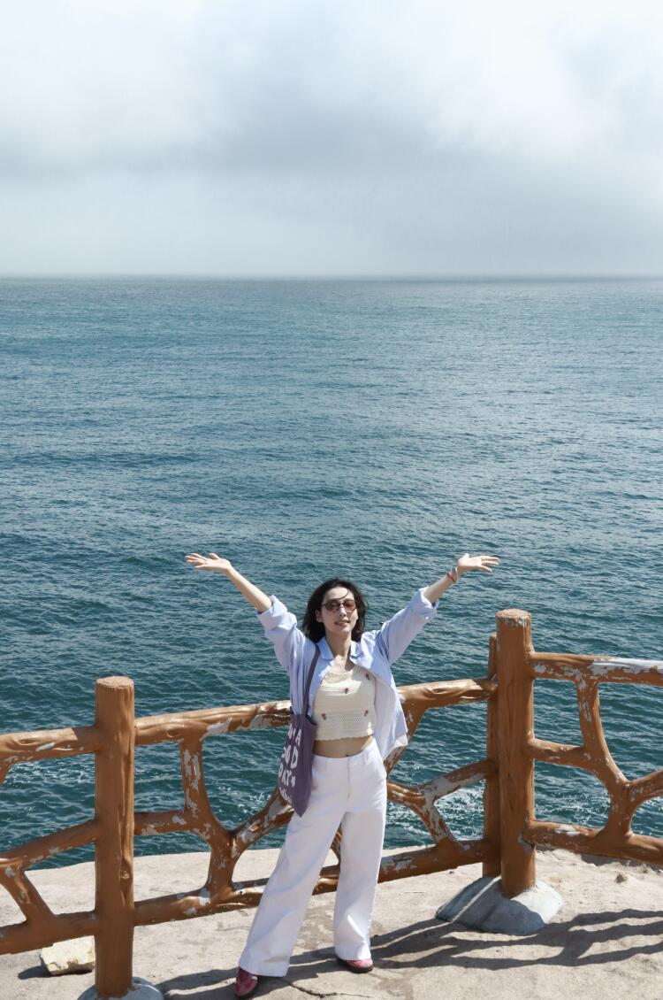

⏰ 今晚就要做的事：① 机票（直飞仅此两班，国庆票走得快）② 普陀山门票+船票在「普陀山一码通」可提前 15 天约，现在已可约 10/3；③ 东极船票「东极海运」提前 7 天 12:00 放票，10/5 的票今天 9/28 中午已开抢，速看余票。
📌 数据口径：机票/酒店为飞猪 2026-09-28 实时查询（机票为每人价、酒店为每晚参考价，1间2人）；门票/船票为 2025 年公开攻略参考价。国庆价格实时浮动、班次以官方当日公告为准，下单前以 App 实付为准。

朱家尖 · 大青山环海公路

东极岛 · 东海尽头的灯塔
🎯 一句话结论
北京直飞舟山居然有航班（中联航，大兴 ⇄ 普陀山机场 2h20m），落地就在朱家尖岛上——机场到沙滩车程 10 分钟，省掉了「飞宁波再大巴 2 小时」的老走法。
推荐动线：朱家尖当大本营（连住 3 晚不搬行李）→ 普陀山当天往返礼佛 → 东极岛 2 天 1 夜看海看日出 → 回朱家尖收官。三座岛风格完全不同：佛系、度假、文艺一次集齐。
两人全程预算约 ¥11,500-12,500（中档，含机票+5 晚住宿+门票船票+吃），比出境海岛省一半还不用办手续。
10 月的舟山是全年最舒服的季节：19-24℃、雨季已过，而且 9 月开渔后梭子蟹正肥——沈家门夜排档压轴。
群岛图鉴 舟山 1390 个岛，值得去的就这几个
礼佛 · 海天佛国
普陀山5A 景区本次必去
🎫 门票 ¥160/人（参考价，节假日或有上浮，需实名预约）⛴ 朱家尖蜈蚣峙码头坐船 15 分钟⏳ 建议 1 整天
观音道场、中国四大佛教名山之一。南海观音立像（33 米鎏金）、普济寺（供奉毗卢观音，海印池石桥出片）、法雨寺、佛顶山慧济寺三大寺一线；紫竹林、不肯去观音院在海边礁石间。晨钟暮鼓+海天一色，是舟山的灵魂。
度假 · 机场所在岛
朱家尖本次大本营
🎫 大青山 ¥100 / 南沙 约¥75 / 乌石塘 ¥40（旺季参考价）✈️ 普陀山机场就在岛上⏳ 建议 1.5-2 天
跨海大桥连舟山本岛，是本次的住宿大本营。大青山国家公园 18 公里环海公路（自驾/包车，里沙+牛头山观景台）、南沙沙质最好的海滨浴场（沙雕广场）、东沙看日出、乌石塘黑色卵石滩；还有新晋地标观音法界（观音圣坛，夜景开灯后很震撼）。
东极岛（庙子湖/东福山/青浜）本次重头戏
⛴ 沈家门半升洞码头 2 小时船程🎫 船票 ¥100-150/程，岛间船 ¥30⏳ 建议 2 天 1 夜
《后会无期》取景地，中国大陆最东的岛屿群。庙子湖是主岛（环岛步道、财伯公雕像、网红打卡墙），东福山海水更蓝、「新世纪第一缕曙光」照射点，适合看日出+环岛徒步，青浜岛有「海上布达拉宫」石屋群。文艺清冷感拉满，是和普陀山完全不同的舟山。
沈家门渔港 & 定海古城顺路安排
🚕 朱家尖打车过去 约 30 分钟🦀 十月梭子蟹正肥
沈家门是世界三大渔港之一，晚上的夜排档一条街几十家排档连成一片，梭子蟹、皮皮虾、带鱼、黄鱼现点现做——回程那晚的海鲜大餐就安排在这。定海古城是舟山本岛的老城（明清街巷），时间富余可以加半天。
🏖 沙滩怎么选 全在动线上，按心情挑

南沙（朱家尖）· 月牙形金沙：舟山沙质最细的一片，晴天长这样

普陀山百步沙 · 沙滩尽头山上就是南海观音，礼佛顺带看海

东极岛外海 · 船开出去约 1 小时海水逐渐变蓝：「果冻海」在这
本次能玩到的沙滩
| 沙滩 | 在哪 | 特色 | 安排在哪天 |
|---|
| 南沙 ⭐ | 朱家尖镇旁 | 舟山沙质最细的沙滩，约 2 公里长，有沙雕艺术广场，设施最全（冲淡/遮阳伞/餐饮） | D3 下午主力玩：玩沙踏浪+看日落 |
| 东沙 | 朱家尖北部 | 人少清净，看日出的经典机位，门票便宜（¥35 参考价） | D1 傍晚散步 or D6 收官再看一眼 |
| 里沙 / 青沙 | 大青山国家公园内 | 原生态，森林挨着沙滩，游客明显更少，自驾环海公路顺路停 | D3 大青山自驾途中 |
| 百步沙 / 千步沙 | 普陀山岛上 | 礼佛顺带看海：百步沙紧挨普济寺、千步沙在法雨寺旁（参考：含在大门票内） | D2 普陀山动线的天然休憩点 |
| 塔湾金沙 | 桃花岛 | 金庸武侠岛上的金沙滩 | 仅 Plan B（东极停航时）才去 |
📝 如实说：舟山近岸沙滩属于东海近海，海水颜色看天气和潮汐——晴天平潮时蓝绿，风浪大或雨后会偏黄，和热带海岛「果冻海」不是一个物种。想拍透蓝的海，靠东极岛（外海岛，D4-D5）和东福山。10 月上旬水温约 20℃ 出头：中午时段下水玩一波没问题（看当天体感），长时间游泳偏凉，主要玩法是踏浪、玩沙、拍照。
嵊泗列岛（含枸杞岛/花鸟岛）动线不顺，留下次
📍 位于长江口，靠近上海方向
蓝海沙滩+贻贝养殖场很美，花鸟岛是「中国圣托里尼」。但它从上海/沈家湾码头走最近，北京直飞舟山的动线下去要折返 4+ 小时车船。适合下次配合上海玩，或单独一次「嵊泗+枸杞深度游」。
桃花岛 / 白沙岛Plan B 备选
⛴ 沈家门/朱家尖有班船⏳ 半天到一天
桃花岛：金庸笔下的黄药师地盘，安期峰+塔湾金沙+射雕影视城，武侠主题半日-一日游。白沙岛：海钓天堂，小众安静。如果东极岛遇大风停航，就用它们顶上（见行程页 Plan B）。
🗺 推荐路线总览（6 天 5 晚 · 三岛动线）
| 天 | 日期 | 住哪 | 玩什么 |
|---|
| D1 | 10/2 五 | 朱家尖 | 16:20 大兴直飞 → 18:40 落地 → 酒店安顿 → 乌石塘看日落 / 海鲜第一顿 |
| D2 | 10/3 六 | 朱家尖 | 普陀山全天：南海观音 → 紫竹林 → 普济寺 → 法雨寺 → 佛顶山（索道下） |
| D3 | 10/4 日 | 朱家尖 | 大青山环海公路自驾 → 南沙玩沙看日落 → 晚上观音法界夜景 |
| D4 | 10/5 一 | 东极岛 | 早船 2h → 庙子湖《后会无期》环岛 → 下午转东福山，住岛上 |
| D5 | 10/6 二 | 朱家尖/东港 | 东福山日出+环岛徒步 → 午后回沈家门 → 晚上夜排档海鲜大餐 |
| D6 | 10/7 三 | — | 睡到自然醒 → 东沙/南沙再看眼海 → 21:00 直飞 → 23:25 落地大兴 |
为什么这样排：朱家尖连住 3 晚不搬行李；普陀山放 D2（如遇预约满员还有 D3 可腾挪）；东极放中段（船票好抢的日期+停航有 Plan B 空间）；最后一天只留机场 20 分钟车程的轻松活动，不怕误机。
推荐组合（2 人往返直飞）¥5,072当前实查合计
✈️ 好消息：北京 ⇄ 舟山有直飞
中联航每天一班大兴 ⇄ 舟山普陀山机场（HSN），2h20m 直达，落地就是朱家尖岛（机场离南沙景区车程 10 分钟、离沈家门码头 30 分钟）。
推荐组合：去 10/2 KN5885（16:20→18:40）+ 回 10/7 KN5808（21:00→23:25），¥1,406+¥1,130=¥2,536/人，两人 ¥5,072。去程下午走不赶早，回程 10/7 白天还能玩大半天。
回程若想早点到家：KN5886（18:00→20:25）¥1,403/人，贵 ¥273，两人差 ¥546，自己权衡。
中联航是廉航：下单时看清楚行李额度（托运通常要另购），两人合买 20kg 托运一般够用。
直飞班次表 飞猪 2026-09-28 实查，价格实时浮动
| 日期 | 航班 | 时间 | 时长 | 单价/人 |
|---|
| 10/2 五 | 中联航 KN5885 推荐 · 当天唯一直飞 | 大兴 16:20 → 普陀山 18:40 | 2h20m | ¥1,406 |
| 10/7 三 | 中联航 KN5808 推荐 · 白天还能玩 | 普陀山 21:00 → 大兴 23:25 | 2h25m | ¥1,130 |
| 10/7 三 | 中联航 KN5886 备选 · 到家早 | 普陀山 18:00 → 大兴 20:25 | 2h25m | ¥1,403 |
🔁 没抢到直飞的备选（仅供参考）
北京飞舟山的中转方案普遍要 12-24 小时（青岛/武汉/广州绕），过夜中转很耗人，不太推荐。
Plan C：飞宁波栎社（NGB）——北京↔宁波班次多、票源足，落地后打车/大巴 1.5-2 小时跨跨海大桥到朱家尖。机票若比直飞省 ¥1,000+/人 才值得考虑，否则直飞体验完胜。
💡 买票提醒
距出发只剩 4 天 + 国庆旺季，看中就锁，这班机的位置每天都在涨。
飞猪/携程对比下单（历史经验：同日同酒店/机票两渠道有价差），以含税实付为准。
5 晚住宿策略朱家尖 4 晚 + 东极 1 晚约 ¥2,400-3,600 合计
🏨 怎么住最聪明
朱家尖连住 4 晚（10/2-10/6）：不搬行李，普陀山、大青山、机场全部 30 分钟生活圈。岛上民宿国庆价 ¥360-870，性价比远高于住普陀山岛上（¥1,000+ 且条件一般）。
东极岛 1 晚（10/5）：想看日出住东福山（条件朴素但日出开门即得）；想住得舒服住庙子湖（码头旁，选择多）。海岛民宿对国庆价已有预期即可。
普陀山岛上住宿只建议「体验派」：想听晨钟暮鼓、赶早课可以挪 1 晚上岛（朝圣客栈 ¥511 起），但行李要搬，慎选。
朱家尖 · 大本营 10/2-10/6 连住 4 晚 · 飞猪 10/2-10/4 实查价
朱家尖云归谷·星空度假泳池酒店 性价比之选
⭐ 高档型📍 观音法界/佛学院旁🏊 泳池+星空房主题
国庆档还能打到 ¥300+ 的泳池度假酒店，亲子/情侣都合适，离机场车程 8 分钟。
星期八海景度假酒店 海景房型
📍 保利自在海（东沙/南沙之间）🌊 海景房
在保利自在海度假区里，离东沙浴场很近，看日出方便，海景房对得起价格。
舟山朱家尖美居酒店（Mercure）国际品牌稳
⭐ 高档型 · 雅高旗下📍 朱家尖城区
追求睡眠品质和早餐水准就选它，连锁品牌服务稳定，适合旅途中间「回血」。
宜尚酒店（普陀山机场店）赶飞机方便
⭐ 高档型 · 东呈旗下📍 朱家尖综合市场旁
最后一晚（10/6）换住这里的思路也行：楼下就是朱家尖综合市场，买海鲜干货特产方便，去机场 5 分钟。
季仑酒店（朱家尖店）省钱选项
📍 朱家尖城区
预算控制选项，干净够住，省下的钱多吃两顿海鲜。
东极岛 · 10/5 一晚 飞猪 10/5-10/6 实查价 · 看日出选东福山，住得舒服选庙子湖
雷迪森颐颂酒店（舟山东极店）岛上品质天花板
📍 庙子湖岛⭐ 岛上最接近连锁水准
东极岛上的「奢侈品」，离码头近，环境和床品明显好于民宿，适合把辛苦的船程日安排得舒服点。
东极岛风情海蓝海景民宿
📍 庙子湖岛 · 龙桥下🌊 海景房
海景房看日出的角度不错，民宿老板一般都管接驳+代订船票，省心。
东极岛漫屿·日出海景民宿小众 · 海上布达拉宫
📍 青浜岛🌅 出海景房
想避开人流住青浜岛（石屋群「海上布达拉宫」所在），但要注意岛间船班衔接，选它就多留 1 小时余量。
止境东极·美宿
📍 庙子湖岛
设计感民宿，预算与品质的中间解。
📝 东福山岛的「老人与海青旅 ¥470 / 陌海客栈 ¥554 / 鸿福山庄 ¥657」是看日出党的经典选择（条件朴素，位置换日出），飞猪搜「东福山」可见；本页东极卡片以有实拍图的为主。
普陀山岛上 · 可选体验 若决定挪 1 晚上岛听晨钟（10/3-10/4 实查价）
普陀山朝圣客栈（普济寺店）位置最好
📍 普济寺商圈
在岛上是最贵的体验（这个价位在朱家尖能住高档酒店），图的是清晨 6 点没人时的普济寺和百步沙。
普陀山洛迦虚谷收藏酒店
📍 岛上🎨 设计型
岛上少见的设计型住宿，禅意氛围拉满，适合纪念日/求婚剧情。
普陀山雷迪森庄园
📍 岛上⭐ 高端型
岛上硬件天花板，国庆 ¥1,245+/晚，除非特别想住岛上否则不如朱家尖+美居。
🧭 节奏设计
佛系一天（普陀山）、疯玩一天（大青山+南沙）、文艺两天（东极岛）、松弛两天头尾——每天只安排一个主主题，双人游不赶场才舒服。
所有岛际交通都集中在上午，下午留给沙滩/步行街/睡觉。
D110/2 周五 · 北京→舟山 · 住朱家尖
13:00大兴机场集合（提前 2h，国庆安检排队久）
16:20KN5885 直飞 → 18:40 落地舟山普陀山机场
19:00打车 10-15 分钟到酒店 check-in，行李安顿（朱家尖连住 3 晚，之后去东极只带背包，大件寄存酒店）
19:30第一顿海鲜：酒店周边排档 or 打车 10 分钟去朱家尖镇上吃
21:00海边散步消食，早点睡（明天礼佛要早起）
💡 落地当晚若还有精力：乌石塘的黑色卵石滩离镇区近，傍晚去听「海浪打鹅卵石」的沙沙声是朱家尖特色白噪音。
D210/3 周六 · 普陀山礼佛日 · 住朱家尖
07:00出发去蜈蚣峙码头（朱家尖打车 15 分钟），凭预约码坐快艇 15 分钟上岛船票+大门票都在「普陀山一码通」小程序提前买好
08:00南海观音立像（33 米鎏金，面朝莲花洋）→ 紫竹林 → 不肯去观音院（观音道场起源地，礁石海景）
11:00普济寺（全山主刹，海印池+八角亭石桥很出片）→ 岛上素斋午餐（普济寺/法雨寺素斋约 ¥10-30，体验感拉满）
13:30岛内巴士到法雨寺（九龙藻井值得看）
15:00佛顶山慧济寺：索道上（约 ¥40-70 参考价）+ 步行下山走香云路 1088 级，体力好反之
17:30千步沙/百步沙海边收尾 → 坐船回朱家尖（旺季末班船较晚，约 21-22 点，以当日公告为准）
19:00海鲜晚餐 + 休整
🌧 Plan B：若 10/3 阴雨，普陀山的禅意反而更浓，正常走；若预约不上当天票，与 D3 对调整天互换即可。
D310/4 周日 · 朱家尖度假日 · 住朱家尖
09:00睡醒慢早餐 → 大青山国家公园（门票 ¥100 参考价）：自驾/包车走 18km 环海公路，里沙生态村、牛头山观景台、青沙嗜浪角逐个停
12:30大青山里或回镇上午餐
14:30南沙海滨浴场：赤脚踩沙、踏浪、沙雕广场拍照（旺季门票约 ¥75 参考价）
17:30南沙/东沙看日落——朱家尖的日落是从海平面下去的，别错过
19:00观音法界看夜景（观音圣坛夜间亮灯超震撼；门票 ¥90 参考价，夜间开放时段以官方公告为准，若不开放改白天 D6 去）
💡 大青山里租电动车/自行车环海的也有；不开车可包车半天（参考 ¥300-500）或打车进出。今晚把明早的干粮和水买好（东极岛上物价高）。
D410/5 周一 · 出发东极岛 · 住东福山/庙子湖
06:30早起！打车 30 分钟到沈家门半升洞码头晕船药提前吃，2 小时船程选中舱/上舱更稳
08:00东极轮出发（船票 ¥100-150）——出沈家门渔港后海水逐渐变蓝
10:00抵庙子湖，民宿放行李 → 《后会无期》取景地打卡、环岛步道、财伯公雕像、网红灯塔
14:30岛间班船转东福山（¥30，30 分钟）——想看日出就住这；怕折腾就住庙子湖
16:00东福山傍晚：大树湾石屋群、第一缕曙光碑附近看日落
18:30渔家海鲜晚餐（岛上选择少，价格高，可让民宿做饭）
🌊 风浪警报：出发前一晚查「舟山海事」停航通知，大风天东极轮会停航——停了就启用 Plan B（桃花岛一日或本岛定海古城+博物馆），并把住宿退改（订免费取消的）。
D510/6 周二 · 东福山日出 → 回舟山 · 住朱家尖/东港
05:00早起看「新世纪第一缕曙光」日出（东福山是中国大陆最东有居民岛，10 月日出约 5:40-6:00，防风外套必穿）
08:30早餐后环岛徒步（红白灯塔、白云庙、象鼻峰，全程约 3h；走不动可只走精华段）
12:00岛间船回庙子湖，简单午餐
14:00东极轮返程（班次以「东极海运」当日公告为准，务必提前 1 天 7:30 抢回程票）
16:00抵沈家门 → 打车 30 分钟回朱家尖酒店（取寄存行李）
18:00沈家门夜排档海鲜大餐压轴：梭子蟹（10 月最肥）、皮皮虾、蛏子、带鱼——明码标价先谈价再点单
20:30渔港夜景散步（十里渔港灯火）→ 回酒店收拾行李
💡 回程船若只有早班，就压缩东福山徒步；「沈家门夜排档」也可改 D5 中午吃。夜排档旺季人多，18:00 前到店更从容。
D610/7 周三 · 收官日 · 晚上回京
09:30睡到自然醒，退房寄存行李
10:00轻松收尾二选一：东沙（人少安静，最后一次看海）或 观音法界（若 D3 夜景没看成，白天进坛参观约 2-3h）
12:30午餐 + 朱家尖综合市场买海鲜干货伴手礼（鱿鱼丝、虾皮、紫菜）
17:30出发去机场（车程 15-20 分钟，国内航班提前 1.5h 到）
21:00KN5808 直飞 → 23:25 落地北京大兴，打车回家 🏠
✈️ 选了 KN5886（18:00→20:25）的话：收尾活动 15:00 结束，16:00 出发去机场。
2 人 6 天 5 晚 · 中档总预算≈ ¥12,000区间 ¥11,500-12,500
💰 账本（2 人合计）
| 项目 | 明细 | 金额 |
|---|
| ✈️ 机票往返 | KN5885 ¥1,406 ×2 + KN5808 ¥1,130 ×2 | ¥5,072 |
| 🏨 住宿 5 晚 | 朱家尖 4 晚（中档 ¥450-550/晚）+ 东极 1 晚（¥450-650） | ≈ ¥2,600 |
| 🎫 门票 | 普陀山 ¥160×2 + 大青山 ¥100×2 + 南沙 ¥75×2 + 观音法界 ¥90×2（参考价） | ≈ ¥850 |
| ⛴ 船票 | 普陀山往返 ¥30×2×2 + 东极往返 ¥130×2×2 + 岛间 ¥30×2×2 | ≈ ¥760 |
| 🦀 吃 | 海鲜大餐 3 顿（人均 ¥150-250）+ 日常简餐 | ≈ ¥2,000 |
| 🚕 当地交通 | 机场/码头/景区打车 + 普陀山岛内巴士 + 大青山包车均摊 | ≈ ¥700 |
| 合计 | 按中档口径 | ≈ ¥12,000 |
🎚 省钱/升级开关
省钱版（≈¥10,000）：住宿全民宿化（朱家尖 ¥360 档）、不去东极（省 ¥1,500+ 船票住宿且少请一天体力）改桃花岛一日。
升级版（≈¥14,000+）：朱家尖住美居 4 晚（+¥1,400）、东极住雷迪森（+¥300）、普陀山挪 1 晚上岛（+¥500）。
大头的钱在机票（42%）——所以 10/2 去程和 10/7 回程这两班直飞越早锁越安心，其它都能调。
⏰ 抢票时间线（照着做就行）
今天 9/28锁机票（直飞两班）+ 「普陀山一码通」约 10/3 门票和船票（可提前 15 天）+ 查看「东极海运」10/5 去程余票（今日 12:00 已放票）
明天 9/29 12:00「东极海运」小程序抢 10/6 回程票（提前 7 天放票；回程另在提前 1 天早 7:30 有补票窗口）
9/29-30订酒店（选免费取消档），10/5 东极民宿直接打电话确认+留微信（岛上民宿电话比平台灵）
10/1查舟山天气+海况；晕船药、防晒、防风外套采购
出发前 1 天再确认东极轮开航（海事停航通知）、普陀山预约码截图存手机
📱 必装小程序/APP
普陀山一码通：门票+船票实名预约（可提前 15 天）
东极海运：东极岛船票（提前 7 天 12:00 放去程、提前 1 天 7:30 回程）
舟山海星轮船：普陀山航线官方购票备选渠道
打车用高德/滴滴（朱家尖岛上叫车响应快，沈家门晚高峰稍慢）
🌤 天气与穿衣（10 月上旬舟山）
气温约 19-24℃，昼暖夜凉：白天长袖+薄外套，看日出/夜排档加防风夹克。
10 月已过主汛期、雨比夏天少，但国庆假期带上折叠伞有备无患；出发前 2 天看临近预报。
海况是最大变量：秋季冷空气+台风尾期，大风天东极线停航——行程已把东极放在中段，前后都有腾挪空间；票前看「舟山海事」通知。
🦀 海鲜攻略
9 月开渔后 10 月是梭子蟹最肥的季节，还有皮皮虾、带鱼、黄鱼、蛏子。
沈家门夜排档：先 Walk 一圈比价，点单前确认时价按斤称重，贵价海鲜（龙虾/帝王蟹）谨慎；人均 ¥150-250 能吃得很好。
普陀山岛上吃素斋（¥10-30/位）既是体验又省钱；东极岛上让民宿做饭比餐馆划算。
伴手礼去朱家尖综合市场买干货（鱿鱼丝/虾皮/紫菜），比景区便宜。
⚠️ 避坑清单
普陀山小门票：大门票之外，部分寺院另收香花券（¥5-10，部分只收现金），备点零钱；岛上也可自带香（或用寺里发的三支清香）。
船票别买黄牛：普陀山、东极船票全部走官方小程序，实名制。
中联航行李：廉航托运额度下单时看清楚，两人合买 20kg。
东极岛住宿：临海房夜晚潮声大，浅眠的人跟老板要背海房或耳塞。
佛门礼仪：殿内不拍照、门槛不踩、男左女右进殿😄
📋 数据与口径说明
机票/酒店：飞猪 2026-09-28 实查（价格实时浮动）。门票/船票/班次：2025 年公开攻略整理的参考值，2026 年国庆以「普陀山一码通」「东极海运」当日公告为准。东极航线近年有码头/班次调整的公开报道，购票时以小程序显示的出发码头为准。天气为气候性描述，具体以临近预报为准。